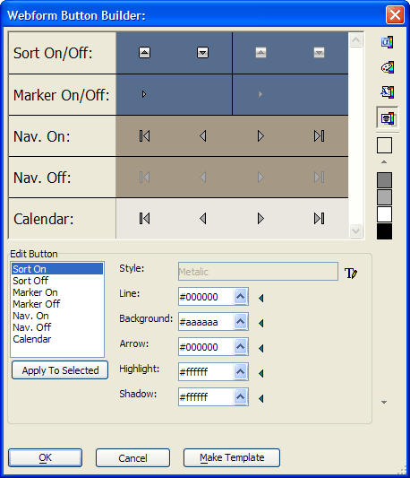

Webform Button Genie
The Webform Button Genie allows you to edit the buttons that are part of a Cascading Style Sheet. To run the Webform Button Genie :
Click the Web Projects button on the main Alpha Anywhere toolbar.
On the Web Project Control Panel, either double click a web component or click New > Alpha Anywhere Web Component > Grid to display the Web Component Builder.
Select the Properties page of the component.
Click Edit Style.
Display the Style Images tab.
Click Webform Button Genie.

|
Function |
Description |
|
|
Loads the Alpha Anywhere Color Palette onto the vertical toolbar. This palette contains the system colors and the current database colors. |
|
|
Loads a Custom Color Palette onto the vertical toolbar. The custom palette is defined by the <span class=Screen>Color Picker</span>. |
|
|
Loads the Page Color Palette onto the vertical toolbar. This palette contains all the colors the used by the style. |
|
Loads the Button Color Palette onto the vertical toolbar. This palette contains all the colors the used by the button. |
By default the Webform Button Builder displays the template associated with the currently selected Cascading Style Sheet. To selected a different style sheet:
Click to the right of the Style list to display the Button Style dialog.
Select a template from the list and click OK.
Applying a Color to a Button Element
Select one or more elements in the Edit Button list.
There are three different ways to apply a color.
Edit of the six color properties of a graphic by entering a six digit hexadecimal number.
Click to select a color from the <span class=Screen>Color Picker</span>.
Select a palette using one of the four palette buttons


 , select a color by clicking its colored square,
then clicking
, select a color by clicking its colored square,
then clicking  .
.
See Also
Limitations
Web publishing applications only.